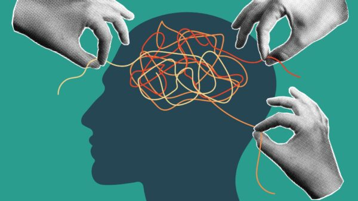

psicologia e uma ciencia que estuda as emoçoes, cituaçoes,traumas,e comportamento humano, e ate o seu desenvolvimento de vida de um individuo acompanhado por profissionais da area.
essa area ja e antiga na humanidade mais com um inicio interresante que surgiu atraves de filosoficos e tambem pensadores da epoca antiga de graçia e ate a roma de civializaçoes antigas sobre o assunto de como entender a tal mente humana.
a psicologia tem diversas areas cada uma delas servindo pra estudar tratar ou analisar diferentes situaçoes mentais e cada um com seus difiriençias em cada area.
psicopatologia e uma das areas da psicologia que e a especializaçao em doenças e tambem transtornos mentais como por exemplo:esquizofrenia,depressao,bipolaridade,autismo,entre outros.
O curso de psicologia geralmente tem duração de cinco anos e oferece uma formação teórica e prática para atuar em diversas áreas da profissão. As disciplinas abordam temas como: História da psicologia, Teorias psicológicas, Neuroanatomia e neurofisiologia, Psicopatologia, Metodologia científica, Psicologia clínica, Psicologia social, Psicologia organizacional, Psicologia educacional, Estágios supervisionados.